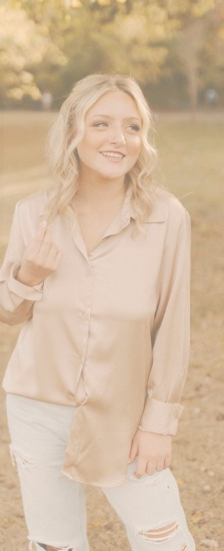
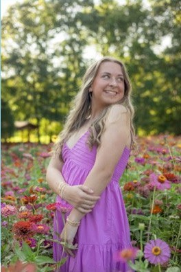
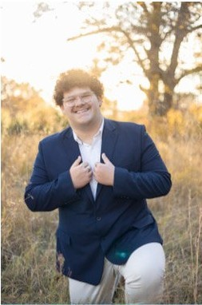
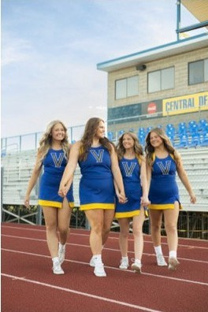
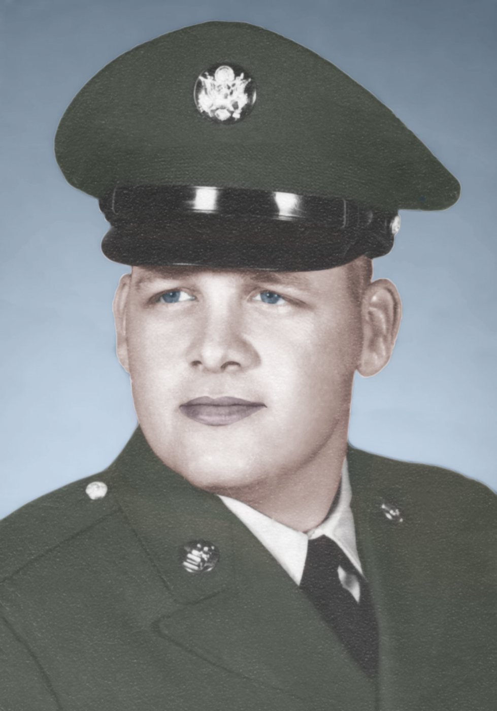
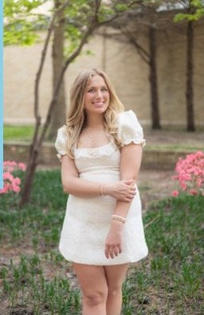
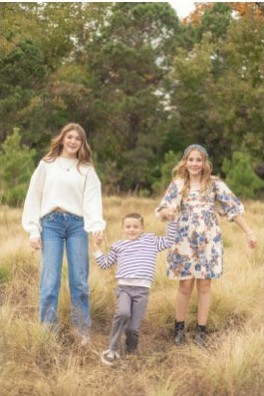
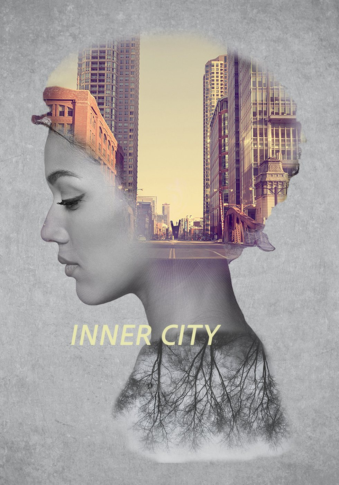
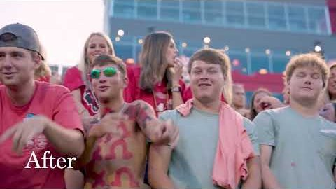
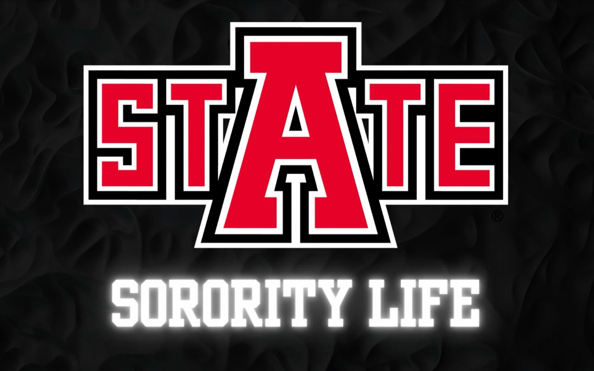

Made to be remembered.
Kaysen Lomax is a photographer and multimedia creator in Jonesboro, Arkansas. Senior portraits, weddings, families, and visual work for brands that needs to land.


Kaysen: these portraits were cropped from your newsletter layouts, so they're small. Swap in the full-size originals before launch.
Eight pieces, short captions
All work → ▶ Video
▶ Video




Make an Impact, Make a Wish
A short film for Arkansas State's Chi Omega chapter about its work with Make-A-Wish.
Kaysen: add your role (shot, edited, color graded?) and the runtime.
Read the case study →Hi, I'm Kaysen.
I've been photographing people in Northeast Arkansas since 2018: seniors, couples, families, teams, and sorority chapters. I also shoot and cut video and design the things that go with it: invitations, posters, ads, magazine covers. Whatever it is, I want the finished piece to matter, not just look good.
- EducationB.S. Mass Communications, Arkansas State, December 2026
- Awards1st Place Portrait & 2nd Place Sports Photography, Great A-State Media Fest
- ExperienceRustic Pine Media (weddings) · Southern Pharmacy (marketing)
From the people in the photos
- 1st Place Portrait Photography, Great A-State Media Fest
- 2nd Place Sports Photography, Great A-State Media Fest
- Photography Award Valley View High School
Kaysen: add one short quote each from a parent, a couple, and a manager you've worked with. Texts and Google reviews count. Ask permission first.
"[A sentence from a senior's parent about how the session felt and how the photos turned out.]"
[Parent's name] · Senior session
"[A sentence from a couple about their wedding day.]"
[Couple's names] · Wedding
"[A sentence from a manager about working with Kaysen.]"
[Name, title] · Southern Pharmacy
Four steps from "hey" to your gallery
The full experience →Say hey.
Fill out the short form with what you're picturing and roughly when. I reply within [1–2 business days].
We plan it.
We talk through location, timing, outfits, and the shots that matter most to you.
We shoot.
I keep things relaxed and moving. You show up; I handle the rest.
Your gallery arrives.
Edited images land in your online gallery within [delivery window], ready to download, share, and print.
Let's talk.
For bookings and for jobs. The form goes straight to me.
Senior photos that look like you.
Your senior year gets one set of photos, and they should look like you, not a pose you were handed. We'll pick spots around Jonesboro or wherever feels like yours, bring the outfits (and the letter jacket, or the truck, or the dog), and make pictures you'll be glad you have long after the cap and gown.

A few favorites
Every senior session
- Session length
- [placeholder]
- Outfits
- [number] outfit changes
- Locations
- [number] spots around Jonesboro, or yours
- Gallery
- Online gallery of [number] edited images
- Planning
- Help choosing locations, timing and outfits before the day
Kaysen: fill in the blanks. Pricing stays off the site; people inquire for it.
Nobody guesses the morning of.
After you book, I send a prep guide: what to wear, what to bring, where we're going and when to show up for the best light.
Kaysen: confirm you'll send a prep guide, and say whether parents can come along.
What a session is like →Dance teams, chapters, formals and recruitment
Group photos and event coverage for teams and sororities.
See team work →Class of 2027?
Tell me what you're picturing and roughly when.
Your day, calmly.
Your wedding day moves fast. My job is to be where the moment is, keep you from stressing about photos, and hand back a gallery that feels like the day did.
Kaysen: do couples book you directly, through Rustic Pine Media, or both? That changes this button and the copy.
Real days, real people
Kaysen: add 8 to 12 images from one or two weddings so couples can see a whole day.
Wedding coverage
- Coverage
- [hours], from getting ready to the send-off
- Second shooter
- [yes / no / optional]
- Engagement session
- [included / add-on]
- Gallery
- Online gallery delivered within [delivery window]
- Travel
- Northeast Arkansas and [travel radius]

More than a phone picture.
For the family that hasn't had a decent photo since the last one on the fridge, and the couple who wants more than a selfie. Relaxed, outdoors or at home, kids and dogs welcome. I keep it moving so no one has to hold a smile for long.
- Session
- [length] · [number] locations
- Gallery
- [number] edited images
Got a date?
Tell me when and where, and I'll tell you if I'm free.
The work
Photography, video, and design, mostly made in Northeast Arkansas. A mix of client work, campus work, and projects I made because I wanted to see if I could.
▶ Case studyCase study ▶ Case study
▶ Case study BeforeAfter
BeforeAfter

 ▶ YouTube
▶ YouTube
 ▶ Video
▶ Video

▶ YouTube ▶ Video
▶ Video

▶ VideoKaysen: chapter videos play right on the page once they're uploaded. Add a one-line role for each, like "Shot, edited and color graded."
Southern Pharmacy: a year of marketing, and one invitation that had to land
Southern Pharmacy needed a consistent look across social media, in-store promotions, and events. In spring 2025, it needed one invitation strong enough to bring 50 of Northeast Arkansas's most influential women to the launch of a new Hormone Optimization & Menopause Awareness initiative. I was the pharmacy's Marketing Coordinator that year, and I designed it.
Kaysen: add one line on the result: attendance, RSVPs, or what the pharmacy said afterward.
- Client
- Southern Pharmacy
- Role
- Marketing Coordinator
- Event
- Hormone House Party · May 8, 2025
- Tools
- Photoshop · Lightroom · InDesign · Illustrator
The in-house creative
For ten months I managed the pharmacy's social media accounts, photographed products, events, and promotions, and designed the flyers and graphics that went out in-store and online.
Kaysen: was anyone else on marketing? Who did you report to?
Make a health topic feel like something you'd want to show up for
The event launched a Hormone Optimization & Menopause Awareness initiative aimed at 50 high-influence women in Northeast Arkansas. The invitation had to be warm, not clinical, and feel exclusive enough that the guest list meant something.
Kaysen: print, digital, or both? Any brand rules you had to follow?
Soft portraits, a house-party glow
The invitation pairs soft-focus portraits of women with a cream-and-glow palette and a clean sans serif, so it reads like an invitation to a gathering rather than a medical notice.
Kaysen: describe the concept in your words, which tools you built it in, whether you wrote the copy, and how you handled revisions and print.
What happened
- [Guests who attended / RSVP rate]
- [Social reach or engagement for the launch]
- [A quote from the pharmacy owner or manager]
What I'd do differently
Kaysen: one honest sentence. Recruiters specifically look for this.
Make an Impact, Make a Wish
A short video for Arkansas State's Chi Omega chapter about its work with Make-A-Wish, Chi Omega's national philanthropy partner. It sits alongside Welcome to Chi Omega (2026) and Sisterhood (2024).
- Client
- Chi Omega, Arkansas State
- Year
- 2026
- Role
- [shot / edited / directed]
- Tools
- [editing software]
Show the philanthropy
Kaysen: who was it for (recruitment week, families, Instagram) and how long is it?
From plan to final cut
Kaysen: describe planning, shooting, editing, music and color, whichever were yours.
Where it went
Kaysen: views, shares, or where it was shown.
Stanley Quencher: one idea, three lengths
A spec commercial for the Stanley Quencher tumbler, cut to 30, 15, and 6 seconds, with a pitch presentation to sell the idea.
- Type
- Spec campaign
- Deliverables
- :30 · :15 · :06 + pitch deck
- Role
- [concept / shot / edited]
- Tools
- [editing software]
▶ :3030-second spot · YouTube
 ▶ :066-second spot · YouTube
▶ :066-second spot · YouTube
Each platform wants a different cut
The same idea had to work at 30, 15, and 6 seconds. Writing one concept that survives every cut is the real test.
Kaysen: say where each length was meant to run.
Sold like a real client
The campaign was presented as a client pitch.
Kaysen: what did the deck cover (audience, concept, storyboards, media plan)? Was this a class project?
Watch the pitch presentation ↗What a session is like.
I plan every session with you ahead of time: location, outfits, timing, the shots you can't leave without. So the day itself feels easy. You get a gallery of edited images, not a folder of everything I shot.
Four steps from "hey" to your gallery
Say hey.
Fill out the short form with what you're picturing and roughly when. I reply within [1–2 business days].
We plan it.
We talk through location, timing, outfits, and the shots that matter most to you. [Deposit amount or %] holds your date.
We shoot.
I keep things relaxed and moving and guide every pose, so you never have to wonder what to do with your hands.
Your gallery arrives.
Edited images land in a private online gallery within [delivery window], ready to download, share, and print.
By session
Pricing is shared when you inquire. Here's what each session covers.
Families & couples
[length] · [number] locations · kids and dogs welcome · [number] edited images
Families & couples →Show up feeling like yourself.
Kaysen: adjust these tips to how you actually work.
What to wear
Pick outfits you already love wearing. Solid colors and soft textures photograph better than big logos or busy patterns.
Timing
Outdoor sessions are planned around the light, usually the hour or two before sunset.
Bring the extras
The letter jacket, the instrument, the truck, the dog. Whatever makes it yours.
Good to know
How far ahead should I book?
Kaysen: your typical lead time for seniors and for weddings.
What if it rains?
Kaysen: your reschedule policy.
How many photos will I get?
Kaysen: a typical range per session type.
Can parents come to senior sessions?
Kaysen: yes, no, or "for the first location".
Do you travel outside Jonesboro?
I photograph sessions across Northeast Arkansas.
Kaysen: add your travel radius and any travel fee policy.
How do I get my photos?
In a private online gallery where you can download and share them.
Not sure which fits?
Tell me what you're picturing and I'll point you to the right session.
Hi, I'm Kaysen.
I started taking pictures in 2018 and never really stopped. That same year I started photographing seniors, couples, families, and events across Northeast Arkansas as a freelancer. In January 2026 I added weddings as a contract photographer with Rustic Pine Media.
Along the way I learned I like the whole picture, not just the photo. I shoot and edit video, design posters and invitations, and spent a year as Marketing Coordinator for Southern Pharmacy running their social media, photographing their events, and designing the graphics that went with them.
I graduate from Arkansas State University in December 2026. What I care about is simple: a fresh idea, a straightforward message, and a finished piece that people remember. If it only looks good, I'm not done yet.
Kaysen: name the kind of full-time role you want and when you're available. Recruiters skim for it.
On the live site, this downloads Kaysen's résumé as a PDF.
Experience
- Contract Wedding PhotographerRustic Pine MediaJan 2026 – now
Weddings and related events: key moments, portraits, candids. Galleries edited in Lightroom and Photoshop.
- Marketing CoordinatorSouthern PharmacyAug 2024 – May 2025
Social media, product and event photography, flyers and campaign graphics. Case study →
- Freelance PhotographerKaysen Lomax PhotographyJun 2018 – now
Portraits, couples, seniors and client sessions, from planning to final edit.
Education
- B.S. Mass CommunicationsArkansas State UniversityDec 2026
Creative Media Production, emphasis in Graphic Communication, minor in Strategic Communication.
Awards
- 1st Place, Portrait PhotographyGreat A-State Media Fest
- 2nd Place, Sports PhotographyGreat A-State Media Fest
- Photography Award · 2D Studio Art Design AwardValley View High School
Tools
Leadership
Personnel Chair, Chi Omega · National Panhellenic Conference Delegate
Professional development
- Foundations of Video: The Art of EditingLinkedIn Learning
- Introduction to Video Color CorrectionLinkedIn Learning
- Adobe Premiere Pro and video editingLinkedIn Learning · October 2023
- Learning How to Shoot Video at HomeLinkedIn Learning · 2023
Let's talk.
Booking a session, hiring for a role, or just have a question: this form goes straight to me.